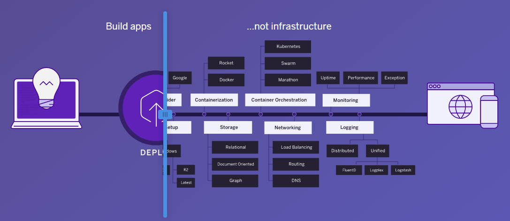

Занимательное дело, решил сходить на рынок, купить пару доменов. Зашёл на reg.ru, вышел и забыл на пол года. Спустя время вернулся с кучей идей и большим желанием прикупить себе парочку, но один хороший человек подсказал мне, что бывает и дешевле. Вспомнил я всё чему меня учили и вышел с этим вопросом в Интернет. Оказалось что можно купить тоже самое и в два раза дешевле. Ну тут моё детское сердце не выдержало, я и купил. Итого: 2 домена по 99 рублей, всего 198 р. Звучит не дорого.
Передо мной стояла задача: взять простую html страничку и залить её на просторы интернета. Я - человек не избалованный знаниями в области создания сайтов понимаю, что мне нужно всего лишь отдавать статический контент сайта, однако, на далёкой, возможно не сбытной, перспективе за этой статикой будет какой-никакой бекэнд, естественно, на Java.

Я спросил у гугла и получил ответ. Heroku - облачная PaaS-платформа. Это значит, что тебе не нужно настраивать сервер и всё всё вокруг него и это замечательно! Я скачал и установил их приложение и через консоль отправил свой прекрасный html файлик на сервера Heroku, ну, а кроме него, еще всё остальное Spring Boot приложение, которое сейчас формальная обертка над статикой, ну пригодится же, точно говорю. Конечно для создание Spring Boot приложения я воспользовался их стандартным генератором, довольно удобно. Сгенерировал -> Распаковал -> Вставил статику -> Готово. У хероку есть несколько способов отправить код на сервер, один из которых - использовать Git репозиторий внутри хероку. Отличный способ, кроме одного момента: аутентификация.
Как вы, вероятно, знаете у гита есть два способа подтвердить себя: https, ssl. Я обычно предпочитаю простые пути, следовательно, https мне в помощь, однако всё не так просто. При выполнении git push система запрашивает ваши креденшиналы. Уж не знаю, что я делал не так, даже авторизовывался через консоль как сказано на сайте этих ребят - ничего не помогало. Всплывает окно авторизации к которому не подходят стандартные. Как типичный разработчик, прежде чем читать документацию, я решил погуглить и погуглил. А нагуглил я себе документацию, оказалось, что поле логина нужно оставить пустым, а в пароль вставить очень хитрый ключ из личного кабинета Хероку. Видимо я вновь, что-то не так понял, т.к. этот метод мне тоже не помог, смерившись со сложностью такого простого способа я решил запушить наХероку публичный ключик и это решило проблему авторизации быстрее чем за 5 минут.
Сижу довольный, смотрю в документацию и изучаю как же подтянуть кастомный домен. Оказалось, что хероку дает тебе специальный DNS target, который ты вписываешь как CNAME, когда редактируешь зону DNS у своего поставщика домена. Как бы не так, не дает мой регистратор задать CNAME на корневой домен (@.example.com) и приводит мне цитаты, видимо из любимых книжек:
Нельзя указывать записи CNAME и другие с тем же именем.
Смотрите RFC1912, раздел 2.4.
Бабах! www.exampe.com можно, *.example.com можно, а @.example.com нельзя! И что делать? Оказывается, что www.exampe.com работает, а exampe.com нет, но вот что забавно, если хоть раз посетить www.exampe.com, то неработающий exampe.com начинает переадресовывать тебя на старый, добрый www.exampe.com. Единственное решение, которое пришло на данный момент - это задать переадресацию у регистратора. Здорово, конечно, но это еще 120 р. за то, что кто-то где-то написал в спецификации. Деньги здесь, конечно, роли не играют, но сам факт такого решения меня возмущает.
И тут я подумал посмотреть на другие хостинги, там оказалось всё еще хуже. На Amazon - $ 7 за перенос домена, на Azure - месяц бесплатно, не плохо, но нужно глубже разобраться, на Google Cloud Engine всё отлично, но инфраструктура и навязаная работа с key value store - мне не нравится (по крайней мере год назад было так), да и всё это IaaS, а мне бы файлик залить…

В итоге, самая простая привязка кастомного домена оказалась у Github Pages. Они дают IP, DNS сервер их легко принимает и всё работает уже через несколько минут. Для хостинга своего одностраничного проекта так и оставил Heroku, а для своего блога на Github Pages сделал привязку домена i-osipov.ru. А это я даже не глубоко копнул в этот мир деплоя веб сайтов и приложений… На пути Докер. Надо узнать что это такое и как его запускать на Windows 8, слышал что-то про виртуалки, но это уже совсем другая история…